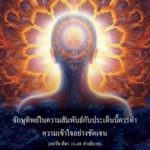

โอ้ ผู้ยอดเยี่ยมในหมู่นักรบแห่ง กุรุ ไม่เคยมีผู้ใดก่อนหน้าเธอได้เห็นรูปลักษณ์จักรวาลของข้านี้ ไม่ว่าจากการศึกษาคัมภีร์พระเวท จากการปฏิบัติพิธีบูชาต่างๆ จากการให้ทาน จากการทำบุญ หรือจากการบำเพ็ญเพียรอย่างเคร่งครัดก็ยังไม่มีผู้ใดที่สามารถเห็นรูปลักษณ์นี้ในโลกวัตถุได้


")
")


จักษุทิพย์ในความสัมพันธ์กับประเด็นนี้ควรทำความเข้าใจอย่างชัดเจน ใครบ้างที่จะสามารถมีจักษุทิพย์ได้ ทิพย์ หมายความว่า แห่งเทพ นอกเสียจากว่าเราจะบรรลุถึงระดับทิพย์เหมือนกับเทพ ไม่เช่นนั้นเราก็จะไม่สามารถมีจักษุทิพย์ได้ และเทพคือใคร ได้กล่าวไว้ในคัมภีร์พระเวทว่า พวกที่เป็นสาวกของพระวิษณุ คือ เทพ (วิษฺณุ-ภกฺตห์ สฺมฺฤโต ไทวห์) พวกที่ไม่เชื่อในองค์ภควานฺ หรือพวกที่ไม่เชื่อในพระวิษณุ หรือพวกที่รู้เพียงส่วนที่ไร้รูปลักษณ์ขององค์กฺฤษฺณไม่สามารถมีจักษุทิพย์ เป็นไปไม่ได้ที่จะมีการประณามองค์กฺฤษฺณแล้วจะมีจักษุทิพย์ ในขณะเดียวกันนั้น เราไม่สามารถมีจักษุทิพย์ได้หากไม่มาเป็นบุคคลทิพย์ อีกนัยหนึ่ง พวกที่มีจักษุทิพย์จะสามารถเห็นสิ่งที่ อรฺชุน ทรงเห็นได้
ภควัท-คีตา ได้พรรณนาถึงรูปลักษณ์จักรวาล ถึงแม้การพรรณนานี้ไม่เคยมีผู้ใดรู้มาก่อน อรฺชุน บัดนี้ เรามีแนวความคิดบางอย่างเกี่ยวกับ วิศฺว-รูป หลังจากเหตุการณ์นี้ บุคคลที่เป็นทิพย์จริงๆ สามารถเห็นรูปลักษณ์จักรวาลขององค์ภควานฺ แต่เราไม่สามารถเป็นทิพย์หากไม่ได้เป็นสาวกผู้บริสุทธิ์ขององค์กฺฤษฺณ อย่างไรก็ดี สาวกผู้ที่อยู่ในธรรมชาติทิพย์จริง และมีจักษุทิพย์จะไม่สนใจในการเห็นรูปลักษณ์จักรวาลขององค์ภควานฺเท่าใดนัก ดังที่ได้อธิบายในโศลกก่อนหน้านี้ อรฺชุน ทรงปรารถนาที่จะเห็นรูปลักษณ์สี่กรขององค์กฺฤษฺณในรูปพระวิษณุ อันที่จริงท่านทรงกลัวรูปลักษณ์จักรวาล
โศลกนี้มีคำพูดสำคัญๆ เช่น เวท-ยชฺญาธฺยยไนห์ ซึ่งหมายถึง การศึกษาวรรณกรรมพระเวท และเรื่องราวกฎเกณฑ์ในพิธีบูชา พระเวทหมายถึง วรรณกรรมพระเวททั้งหมด เช่น พระเวททั้งสี่เล่ม (ฤคฺ, ยชุรฺ, สาม และ อถรฺว) และ ปุราณ ทั้งสิบแปดเล่ม อุปนิษทฺ และ เวทานฺต-สูตฺร เราสามารถศึกษาคัมภีร์เหล่านี้ที่บ้านหรือที่ใดก็ได้ ในทำนองเดียวกัน มี สูตฺร เช่น กลฺป-สูตฺร และ มีมำสา-สูตฺร เพื่อศึกษาพิธีกรรมบวงสรวงบูชา ทาไนห์ หมายถึง การให้ทานซึ่งถวายให้แก่ผู้ที่เหมาะสมเช่นบุคคลผู้ที่ปฏิบัติรับใช้ด้วยความรักทิพย์ต่อองค์ภควานฺ เช่น พฺราหฺมณ ไวษฺณว ในทำนองเดียวกัน “การทำบุญ” หมายถึง อคฺนิ-โหตฺร และหน้าที่ที่ได้กำหนดไว้สำหรับวรรณะต่างๆ การอาสายอมทำให้ร่างกายเจ็บปวดบ้างเรียกว่า ตปสฺย ดังนั้น เราสามารถปฏิบัติตามรายการทั้งหมดนี้ ยอมรับการบำเพ็ญเพียรทางร่างกาย การให้ทาน การศึกษาคัมภีร์พระเวท ฯลฯ แต่นอกเสียจากว่าจะมาเป็นสาวกเหมือนกับ อรฺชุน ไม่เช่นนั้นก็จะเป็นไปไม่ได้ที่จะได้เห็นรูปลักษณ์จักรวาล พวกที่ไม่เชื่อในรูปลักษณ์จินตนาการว่าได้เห็นรูปลักษณ์จักรวาลขององค์ภควานฺ แต่จาก ภควัท-คีตา เราเข้าใจว่าพวกไม่เชื่อในรูปลักษณ์ไม่ใช่สาวก จึงไม่สามารถเห็นรูปลักษณ์จักรวาลของพระองค์ได้
มีหลายคนสร้างอวตารต่างๆ และอวดอ้างอย่างผิดๆ ว่ามนุษย์ธรรมดาเป็นองค์อวตาร แต่นั้นเป็นความโง่เขลาเบาปัญญาทั้งสิ้น เราควรปฏิบัติตามหลักธรรมของ ภควัท-คีตา ไม่เช่นนั้นจะเป็นไปไม่ได้ที่จะบรรลุถึงความรู้ทิพย์อย่างสมบูรณ์ แม้จะถือว่า ภควัท-คีตา เป็นระดับประถมศึกษาของศาสตร์แห่งองค์ภควานฺ แต่ก็ยังมีความสมบูรณ์พอที่จะทำให้เราแยกแยะว่าอะไรคืออะไร เหล่าสาวกของอวตารจอมปลอมอาจกล่าวว่า พวกตนก็เห็นอวตารทิพย์รูปลักษณ์จักรวาลขององค์ภควานฺเช่นกัน แต่เช่นนี้ไม่เป็นที่ยอมรับเพราะได้กล่าวไว้อย่างชัดเจน ณ ที่นี้ว่านอกเสียจากว่าจะมาเป็นสาวกขององค์กฺฤษฺณไม่เช่นนั้นก็จะไม่สามารถเห็นรูปลักษณ์จักรวาลขององค์ภควานฺได้ ดังนั้น ก่อนอื่นเขาต้องมาเป็นสาวกผู้บริสุทธิ์ขององค์กฺฤษฺณ จากนั้นจึงอ้างได้ว่าตนสามารถแสดงรูปลักษณ์จักรวาลที่ได้เห็นมา สาวกขององค์กฺฤษฺณไม่ยอมรับอวตารจอมปลอม หรือบรรดาสาวกของอวตารจอมปลอม